ALL STORIES
活動報告一覧
気になる活動を選ぶと、写真と詳しい記録をご覧いただけます。
2026
7件の活動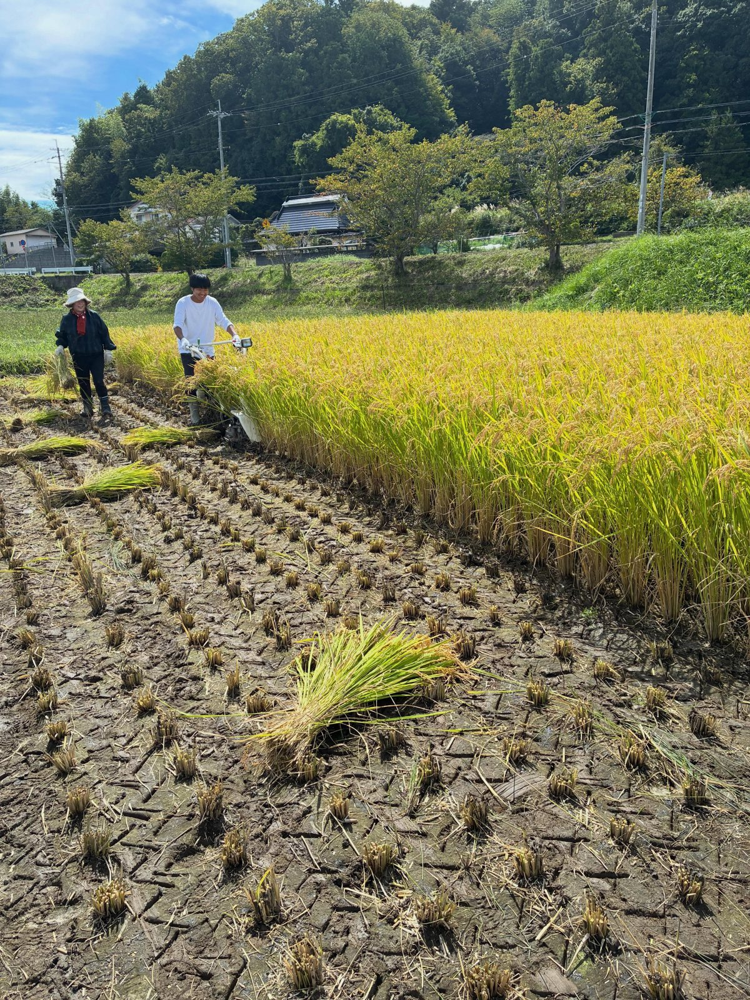
稲刈りと稲木干しのお手伝い 地域の方に教わりながら、初めてのバインダーで稲刈りに挑戦。稲木に掛けて干した稲藁は、三田の伝統的なウド小屋づくりにもつながります。 活動を読む 地球と遊ぼう「稲刈り」
里野山家で、秋の稲刈りイベントを開催しました。黄金色に実った田んぼで稲を刈り、稲木を立てて収穫した稲をかける、昔ながらの稲木干しまで体験しました。 お昼は、5月の田植えイベント…
活動を読む
地球と遊ぼう「稲刈り」
里野山家で、秋の稲刈りイベントを開催しました。黄金色に実った田んぼで稲を刈り、稲木を立てて収穫した稲をかける、昔ながらの稲木干しまで体験しました。 お昼は、5月の田植えイベント…
活動を読む
 BBQ＆川遊びイベント
三田市野外活動センターで、BBQと川遊びのイベントを開催しました。たくさんのご家族とサークルメンバーが参加し、子どもたちは川の生き物探しや水遊びを満喫しました。 川で遊んだ後は…
活動を読む
BBQ＆川遊びイベント
三田市野外活動センターで、BBQと川遊びのイベントを開催しました。たくさんのご家族とサークルメンバーが参加し、子どもたちは川の生き物探しや水遊びを満喫しました。 川で遊んだ後は…
活動を読む
 流しそうめん＆スイカ割り
ラララたかひら主催で、流しそうめんとスイカ割りを行いました。子どもたちも竹を割り、節を取り、表面を削るところから準備に参加しました。 真剣に竹と向き合って完成させた流し台で、夏…
活動を読む
流しそうめん＆スイカ割り
ラララたかひら主催で、流しそうめんとスイカ割りを行いました。子どもたちも竹を割り、節を取り、表面を削るところから準備に参加しました。 真剣に竹と向き合って完成させた流し台で、夏…
活動を読む
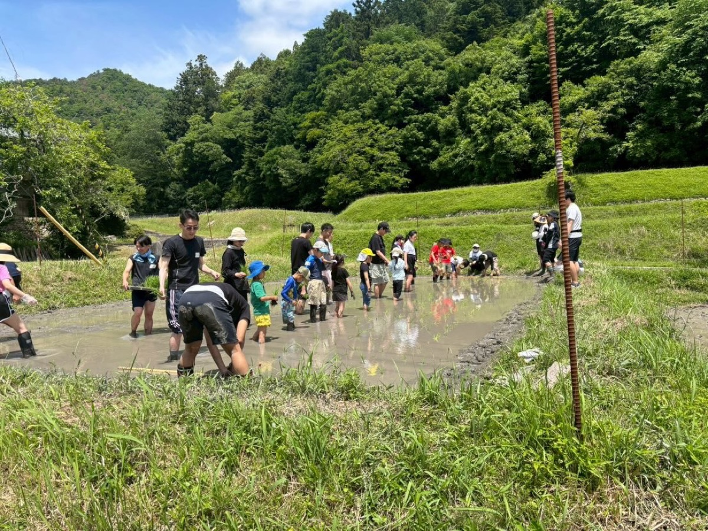
地球と遊ぼう「田植え」 「地球と遊ぼう」の田植えイベントを開催しました。ご家族や新しく加わった学生メンバーと一緒に田んぼへ入り、泥の感触を楽しみながら苗を植えました。 いちご狩りや羽釜ご飯、日本熊森協… 活動を読む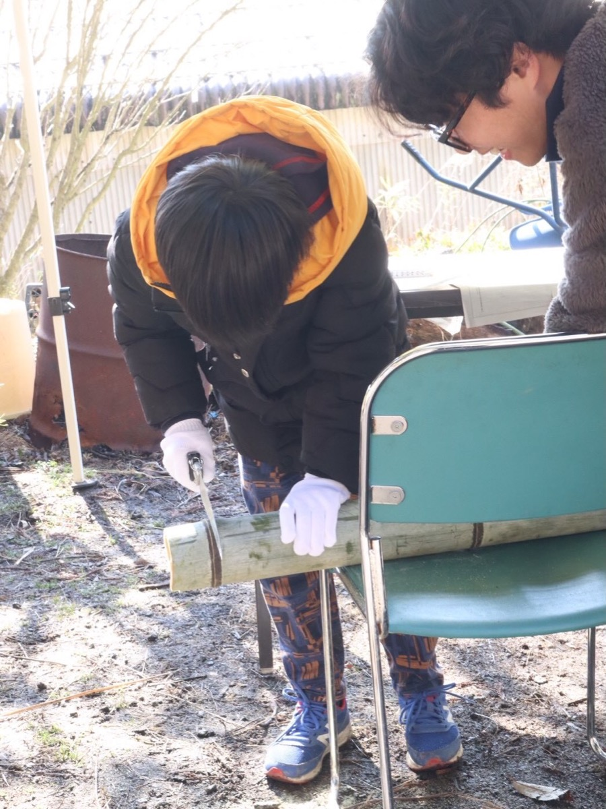
竹箸づくり 竹を切るところから始める竹箸づくりイベントを開催しました。参加者のみなさんは、それぞれのこだわりを込めた自分だけの竹箸を完成させました。 お昼は好きな具材を選んだピザ作り。焚き… 活動を読む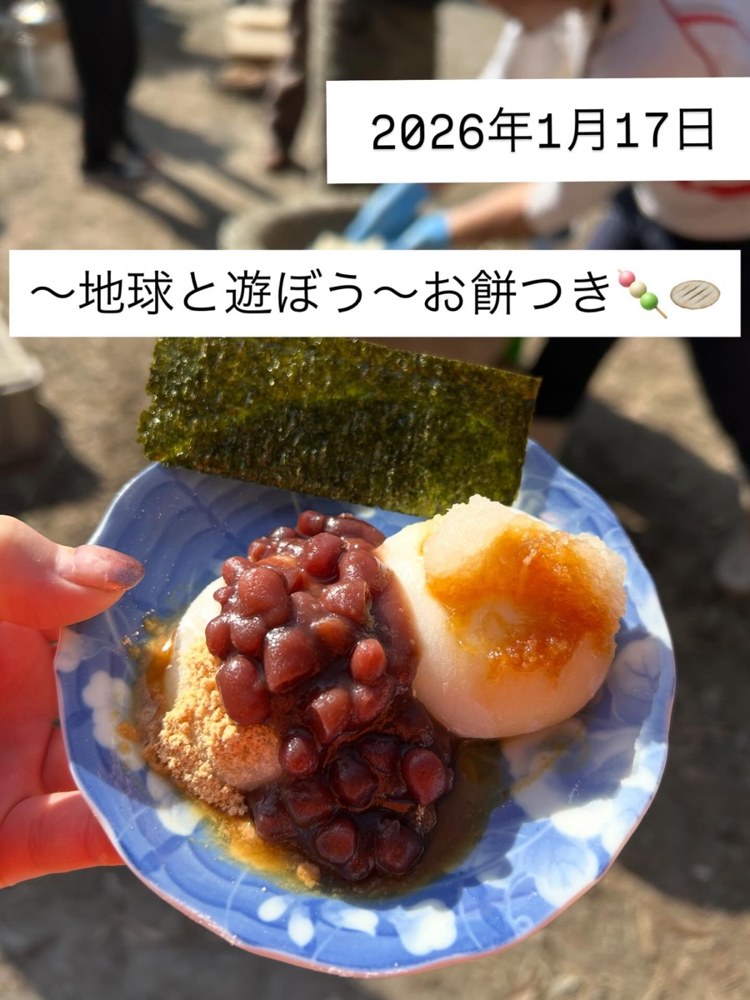
地球と遊ぼう「餅つき」 今年最初の「地球と遊ぼう」として、餅つきイベントを行いました。田植えと稲刈りをして育てたお米や、里野山家のみなさんが育てた小豆、手作り醤油を味わいました。 みんなでついたお餅は… 活動を読む2025
10件の活動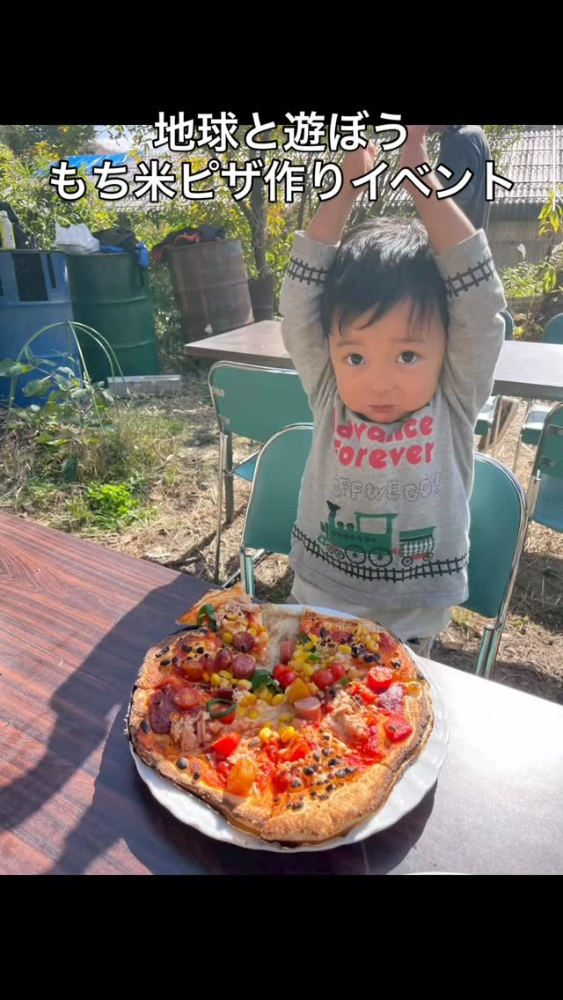
ピザ作り＆芋掘り体験 「地球と遊ぼう」のイベントで、ピザ作りと芋掘りを体験しました。雲ひとつない青空と自然豊かな山に囲まれながら、自分たちで作ったピザをみんなで味わいました。 秋の畑ではさつまいもを… 活動を読む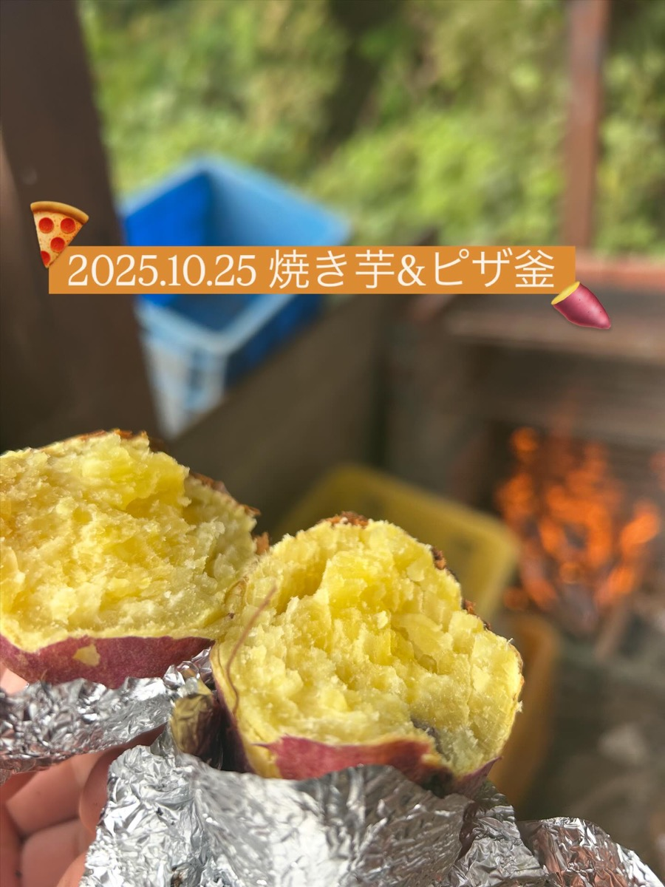
さんだまち博「芋掘り・焼き芋・ピザ作り」 さんだまち博のプログラムとして、芋掘り・焼き芋・ピザ作りのイベントを開催しました。畑で立派なさつまいもを収穫し、好きな具材を選んだピザを石窯で焼き上げました。 収穫したさつまい… 活動を読む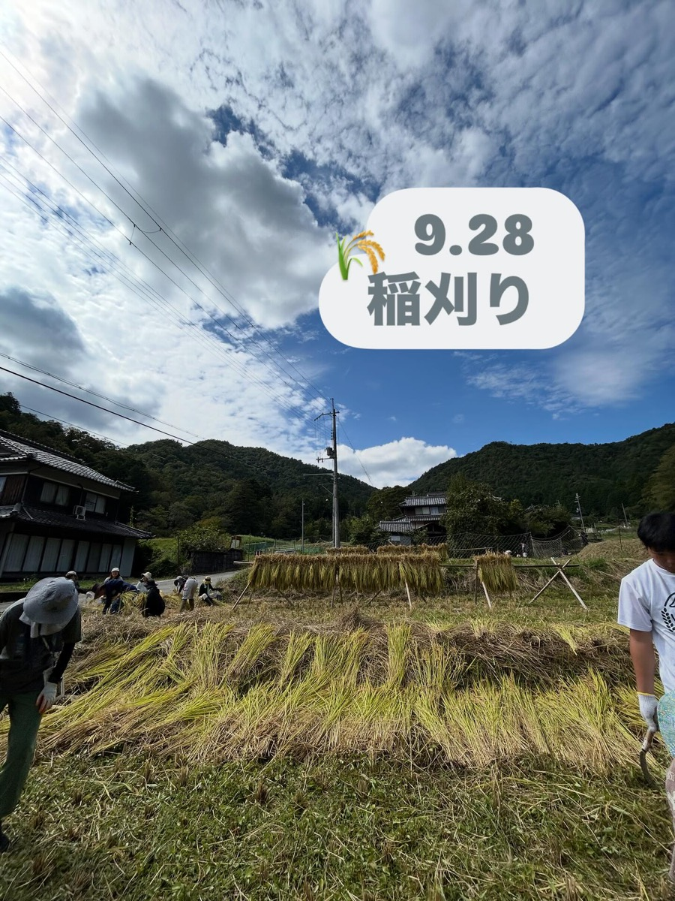
稲刈り体験 稲刈りイベントに参加しました。稲が抜けないようにしっかり束ね、穂を傷つけないように鎌を入れるなど、手作業ならではの難しさと工夫を学びました。 作業の後は、三田の新米を使ったご飯… 活動を読む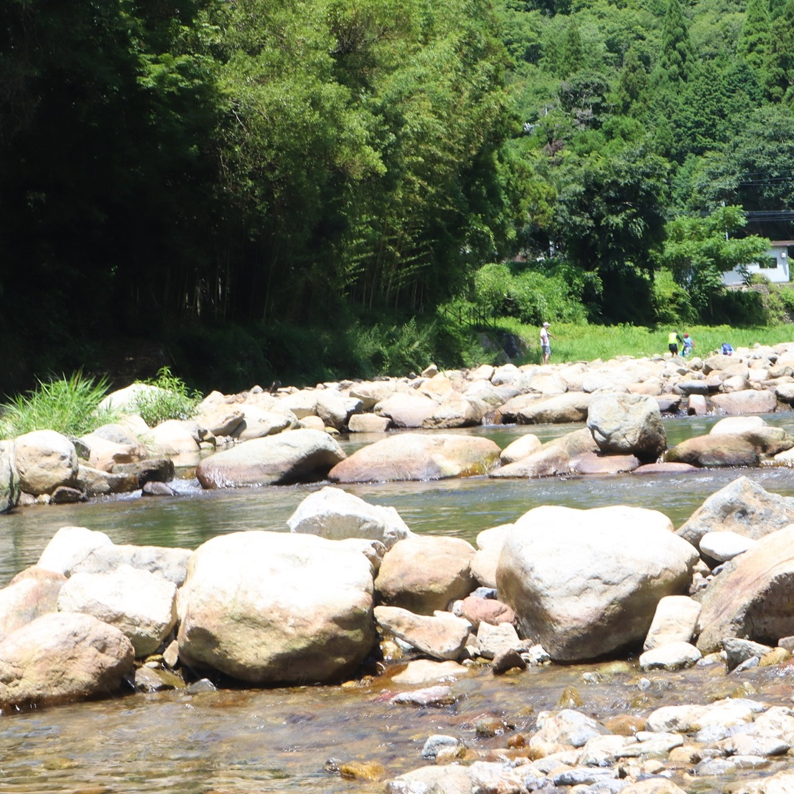
河原でBBQ＆川遊び 「地球と遊ぼう」のBBQと川遊びを開催しました。快晴の下、参加者のみなさんと協力してBBQを準備し、料理を囲んで楽しい時間を過ごしました。 子どもも大人も川遊びに夢中になり、水… 活動を読む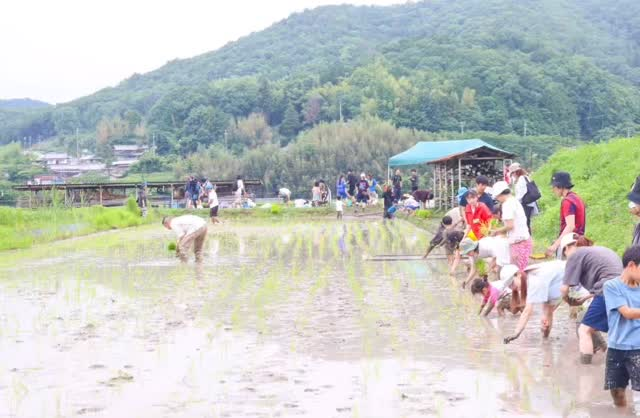
tatotetoフード 田植えイベント tatotetoフードさん主催の田植えイベントに、運営スタッフとして参加しました。参加者のみなさんや子どもたちと一緒に田んぼへ入り、苗を一本ずつ手で植えました。 作業後には、学… 活動を読む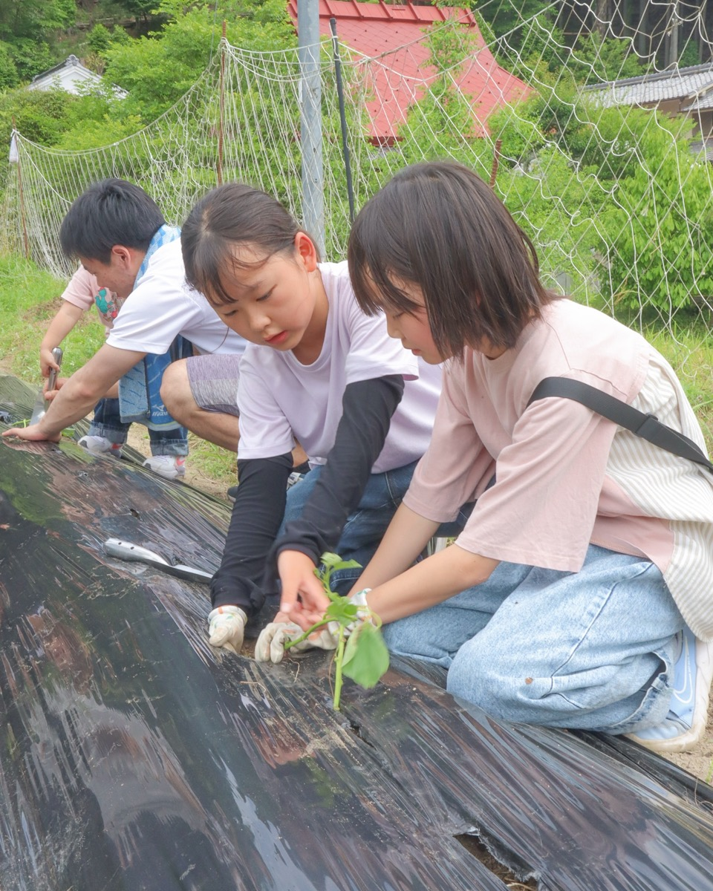
さつまいもの苗植え 「地球と遊ぼう」のさつまいも苗植え体験を開催しました。過ごしやすい天気の中、子どもたちは苗を一本ずつ丁寧に土へ植えました。 お昼には羽釜で炊いたご飯をみんなでいただき、自然の中… 活動を読む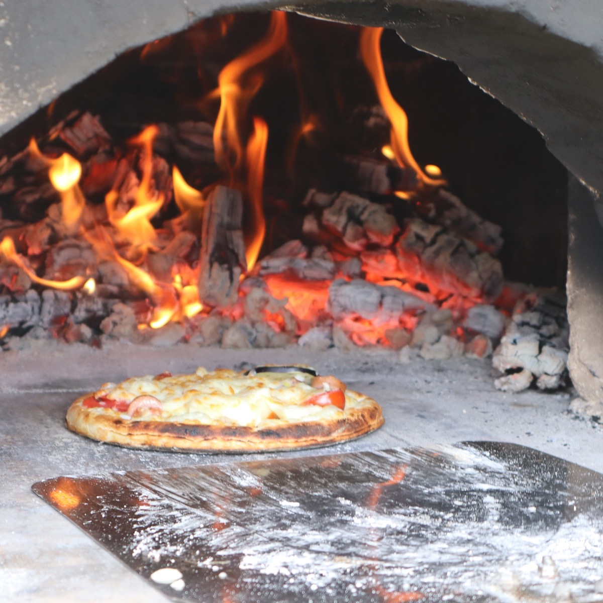
里山新歓・ピザパーティー 里野山家で里山新歓を行いました。20人以上の新入生が参加し、ピザ窯を使った本格的なピザ作りを楽しみました。 天候にも恵まれ、自然の中で食事と交流を楽しみながら、ラララたかひらの… 活動を読む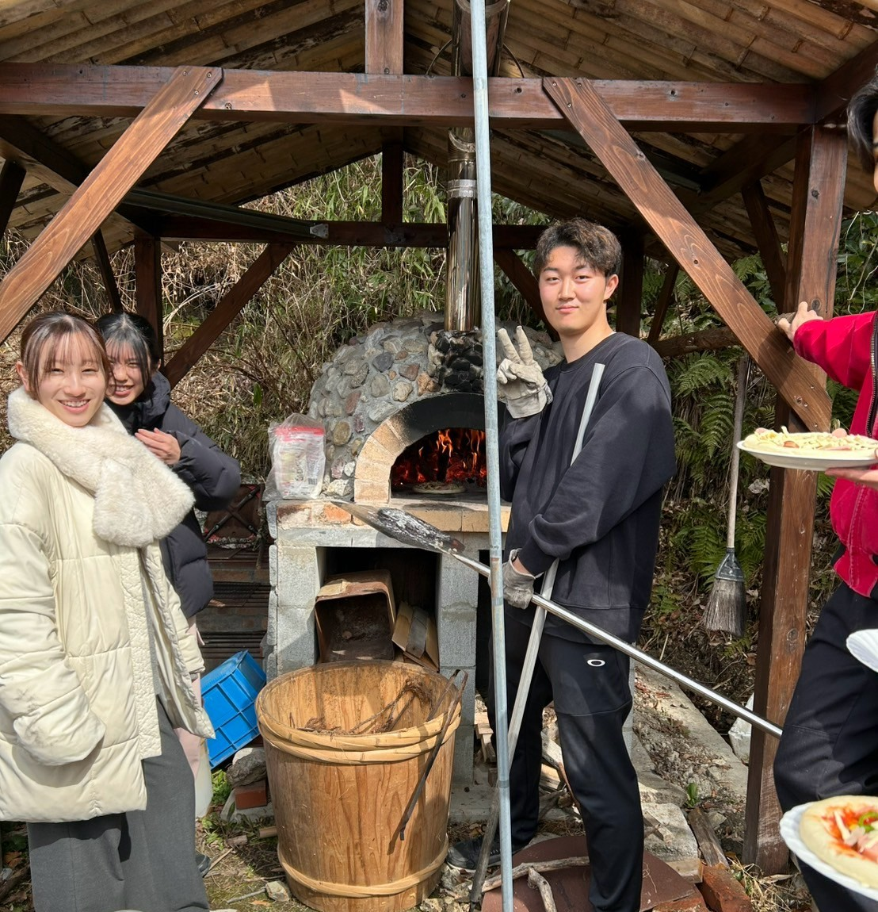
地球と遊ぼう「ピザ窯パーティー」 今日はピザ窯パーティーをしました！具材が沢山あって皆アレンジして楽しんでました🎶リンゴピザやじゃがバター、オニオンスープもあってお腹いっぱいで幸せでした(ㅅ´ ˘ `) ピザや… 活動を読む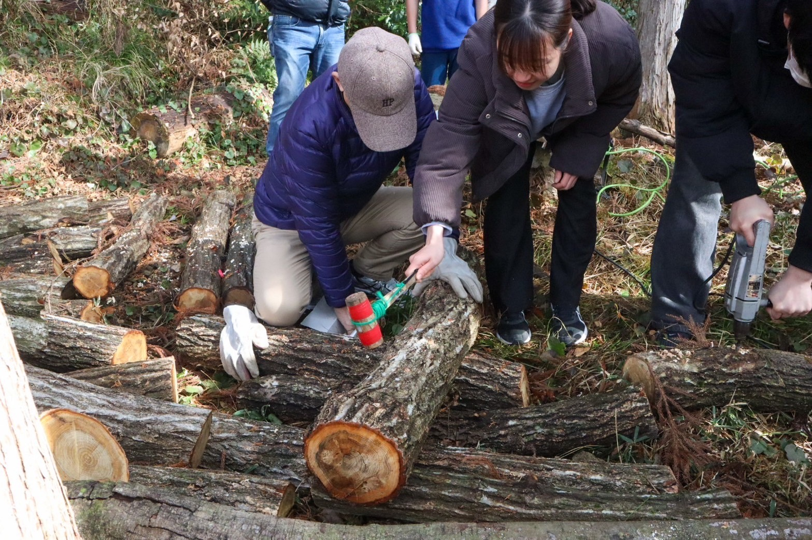
地球と遊ぼう「しいたけの菌打ち体験」 2/16に｢地球と遊ぼう」でしいたけの菌打ち体験をしました！ 里野山家の親林隊の方にも協力していただき、ドリルなどを用いて菌打ちをしました🍄🟫これからしいたけが生えてくるのが… 活動を読む 地球と遊ぼう「餅つき＆スタードーム作り」
今年初のラララ活動は「地球と遊ぼう」で、餅つきと竹ドームを作るイベントしました！ 竹ドーム思ってる以上に大きく、全員の力で完成させました✨作った後は子供たちも興味津々で中に入っ…
活動を読む
地球と遊ぼう「餅つき＆スタードーム作り」
今年初のラララ活動は「地球と遊ぼう」で、餅つきと竹ドームを作るイベントしました！ 竹ドーム思ってる以上に大きく、全員の力で完成させました✨作った後は子供たちも興味津々で中に入っ…
活動を読む
2024
12件の活動 地球と遊ぼう「しめ縄作り」
2/22に今年最後の「地球とあそぼう」しめ縄作りを開催しました🌎 午前中はしめ縄を編みやすくするするために稲わらをてんころで叩いて柔らかくしました！大人も子供も真剣👏💯 お昼は…
活動を読む
地球と遊ぼう「しめ縄作り」
2/22に今年最後の「地球とあそぼう」しめ縄作りを開催しました🌎 午前中はしめ縄を編みやすくするするために稲わらをてんころで叩いて柔らかくしました！大人も子供も真剣👏💯 お昼は…
活動を読む
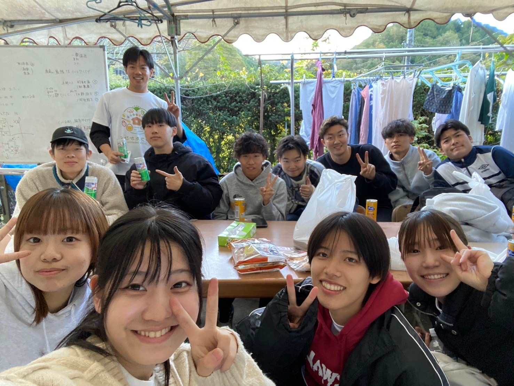
地球と遊ぼう「芋掘りイベント」 今日は「地球と遊ぼう」の芋掘りイベントでした！ 今回は6月15日に植えたさつまいもの収穫を行いました😊 想像した以上にたくさん収穫でき、ごはんや焼き芋をして楽しみました(*^^*) 活動を読む さんだまち博「芋掘り、ピザ窯パーティー」
雨天の中開催でしたが20人以上の方が参加してくださいました！ さつまいも掘りでは、親子が協力して一緒に土を掘り進め、大小さまざまなさつまいもを見つけて楽しんでくれました！ ピザ…
活動を読む
さんだまち博「芋掘り、ピザ窯パーティー」
雨天の中開催でしたが20人以上の方が参加してくださいました！ さつまいも掘りでは、親子が協力して一緒に土を掘り進め、大小さまざまなさつまいもを見つけて楽しんでくれました！ ピザ…
活動を読む
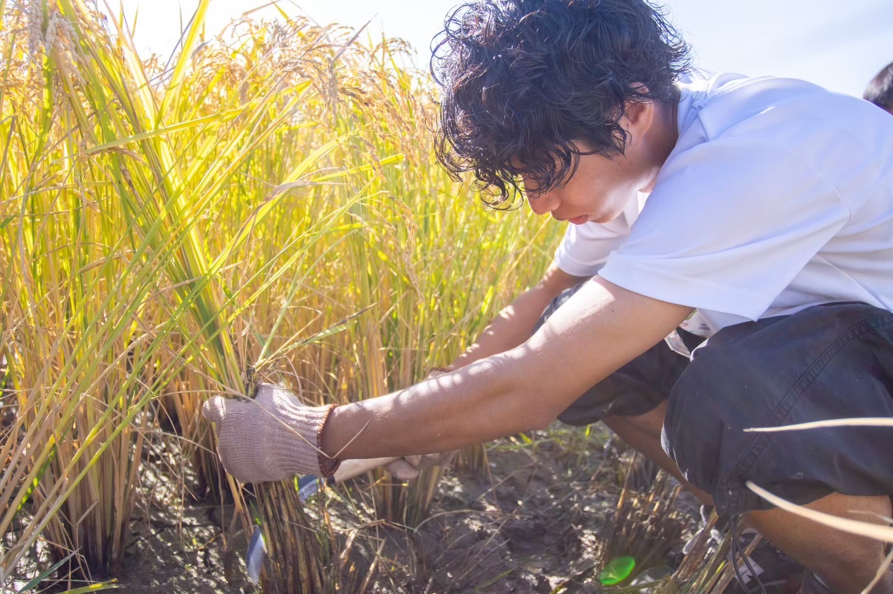
稲刈りイベント 10/6（日）稲刈りイベント！「tatotetoフード」さん主催の稲刈りイベントに、運営として参加しました。 10月にしては暖かい良い天気の中、無事にイベントを開催することがで… 活動を読む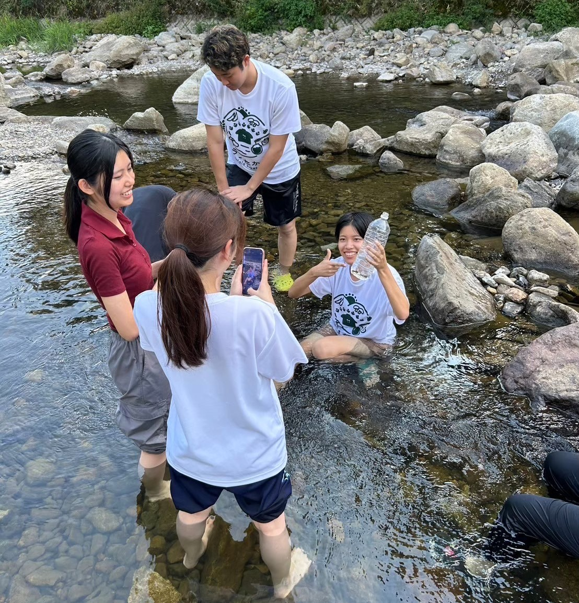
草抜き、BBQ 今日は、さんだまち博で使う予定のお芋の雑草抜きをしました！ 9月中旬になっても暑さは続き、少し作業をするだけで汗が止まりません☀️💦農薬を使わずお野菜を育てる大変さを感じました… 活動を読む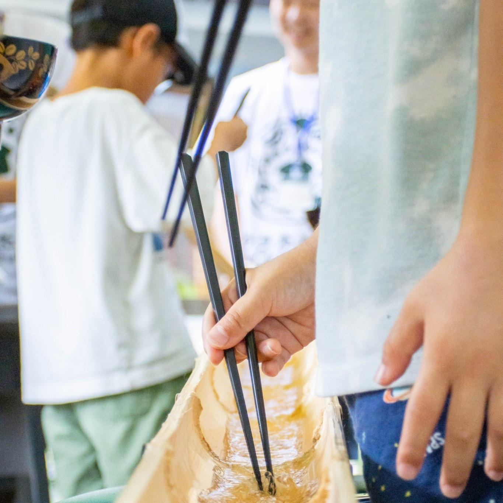
流しそうめんイベント ラララたかひら主催のイベントの様子です。天気にも恵まれ、楽しい夏のイベントを無事行えました！ ・内容 生ゴミを堆肥に変えるコンポスト体験 牛乳パックから紙を作る紙漉き体験 流し… 活動を読む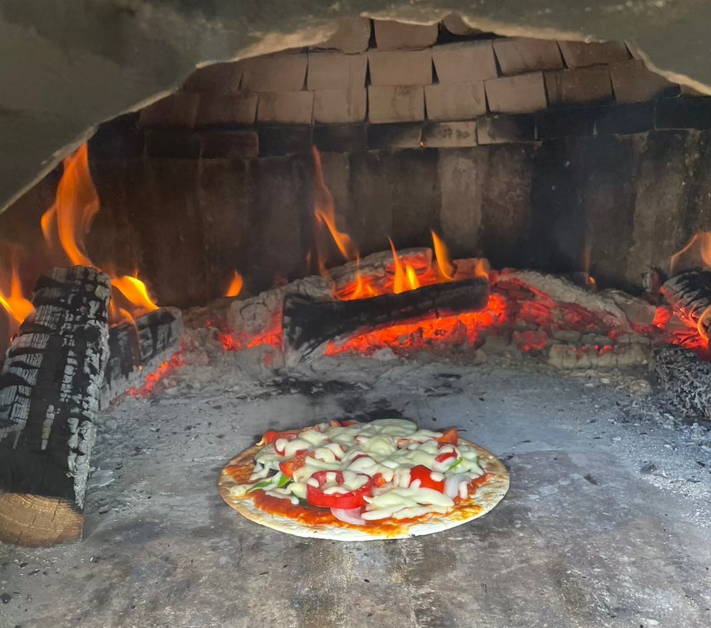
第3回「地球とあそぼう」田んぼのお世話&ピザ窯でピザパーティ 田せりやピザ作りを楽しみました！！😄 暑い中皆さん田せりを楽しんでくれてました！！ イベントに参加した子どもたちは、虫とりを楽しんでました！！！🦋 活動を読む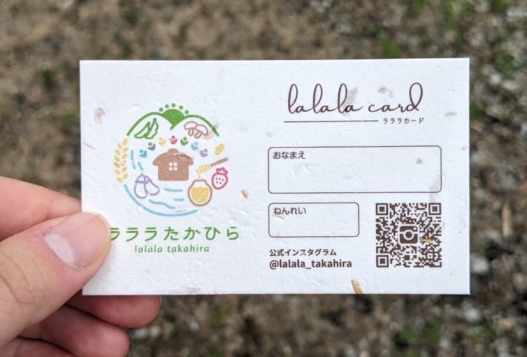
ラララカードが完成しました。 高平で取れたもみ殻を、紙に混ぜ込み紙漉きをして作りました！ カードに押すスタンプも自分たちで作りました！ 子供たちも色々なスタンプ押して楽しんでくれました⭐️ ラララたかひらが… 活動を読む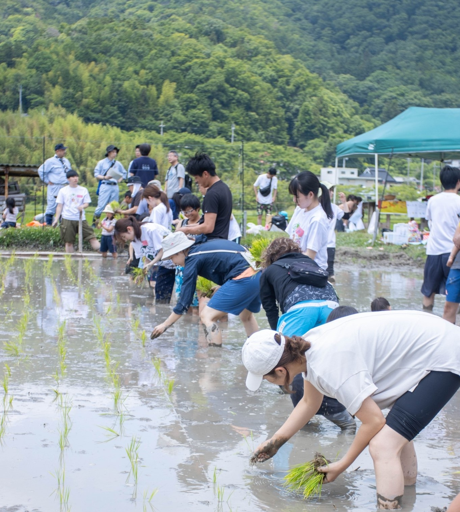
田植えイベント 今回は、子どもたちや参加者の方と一緒に田植えをしたり、虫とりをしたりしました！😄 天候も雨になりそうでしたが、みなさんの田植えをしたいという気持ちが伝わり、いい天気で行うことが… 活動を読む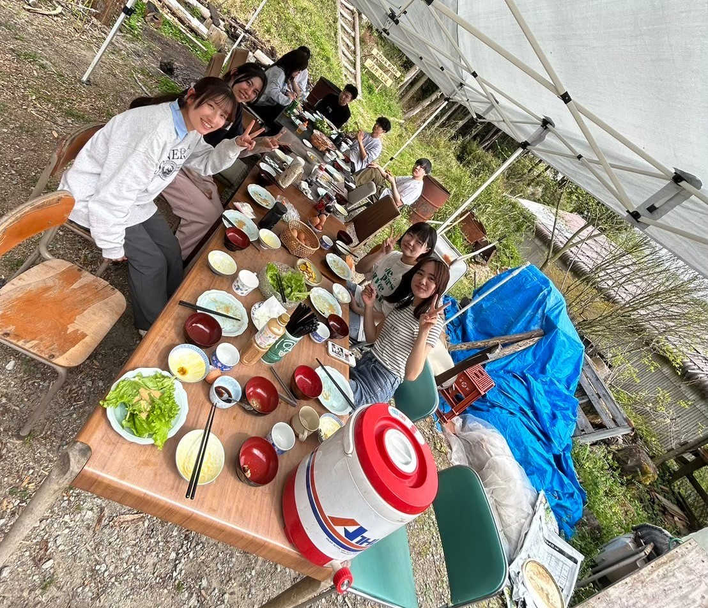
里山新歓 里野山家にて、新入生歓迎会を行いました。新入生には、ラララたかひらの雰囲気や、高平地域の魅力を感じていただくことができました。 参加してくれた新入生は15人でした。 当日は、味… 活動を読む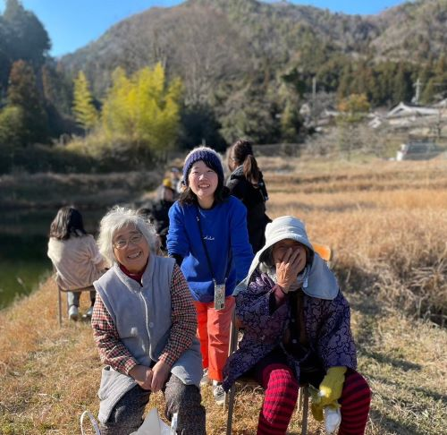
地球とあそぼう〜とんど焼き〜 今日は高平のとんど焼きに参加してきました！ 12月に地球とあそぼうで作ったしめ縄を燃やしました🔥 お家から門松を持ってきて燃やす人もいました^ ^ 地域の行事ということで、普段… 活動を読む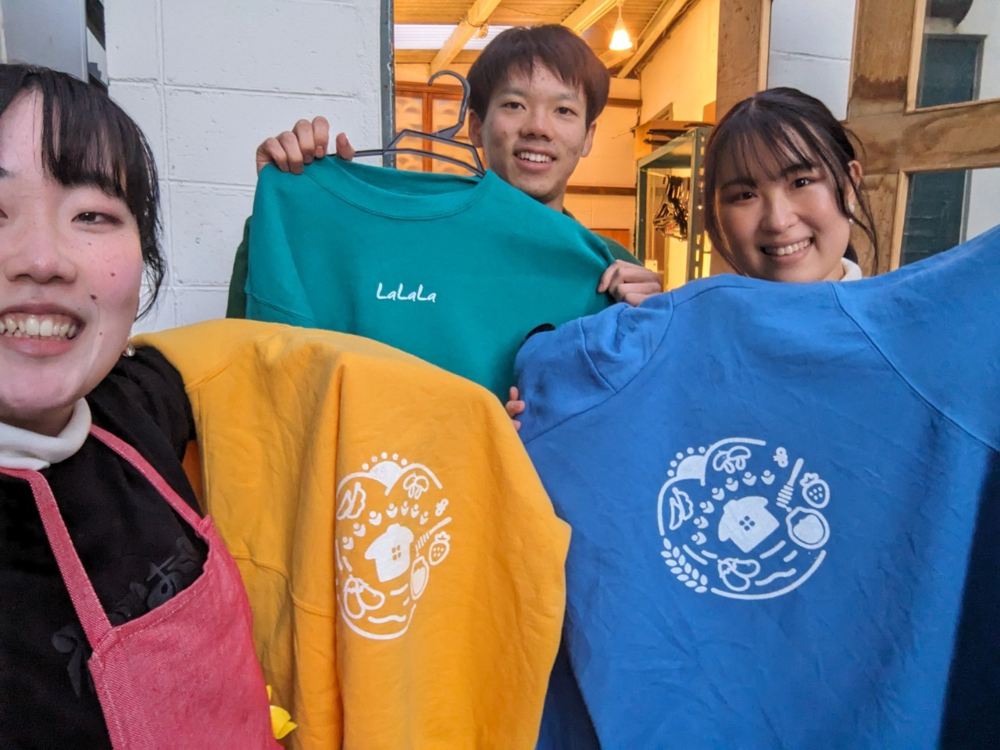
ラララパーカー作り @shioyaprinting さんに教えてもらいながら、メンバー全員初のシルクスクリーン！ 一昨年？ラララたかひらのロゴが出来てから半袖Tシャツを作り、それを着用して活動して… 活動を読む2023
6件の活動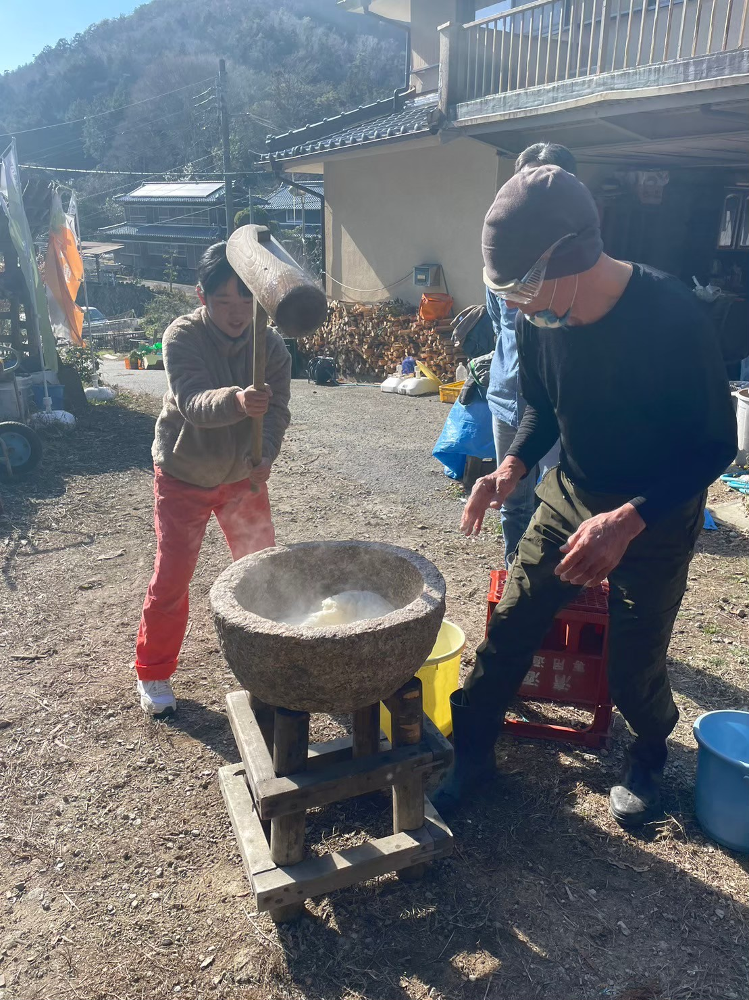
「地球と遊ぼう」餅つき、しめ縄作り 今回のイベントでは、しめ縄作りと餅つきをしました。 餅つきは、高平でとれた新米のもち米を使って、餅つきを行いました。子供から大人まで餅つきをして… 活動を読む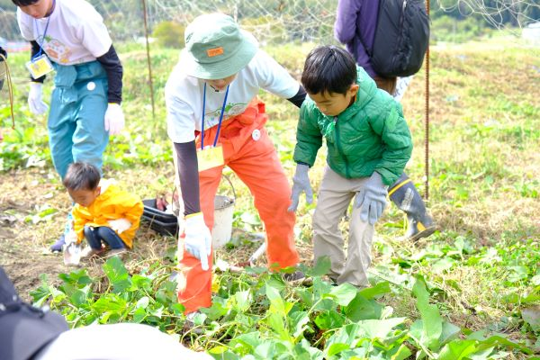
芋掘り体験、焼き芋、ピザ窯パーティーin里野山家 本日はありがとうございました！ さすが山。天候は気まぐれでしたが、晴れ間が多く良い天気…だったと思います☀☁ 美しい里山の風景をみなさんと作れたこと、嬉しく思っています。たくさ… 活動を読む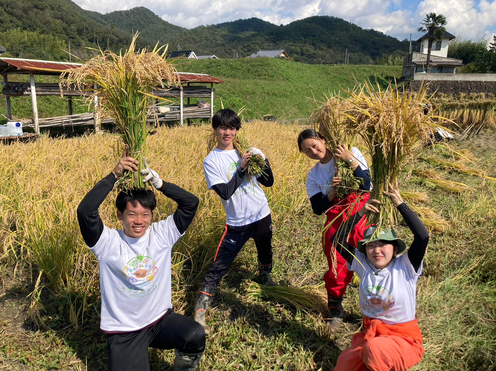
稲刈りイベント 毎年恒例たとてとfoodさん主催の稲刈りに、今年もボランティアスタッフとして参加させていただきました！ 無農薬の田んぼで、すくすくと育った稲を自分の手で刈って束ねる。そして稲木… 活動を読む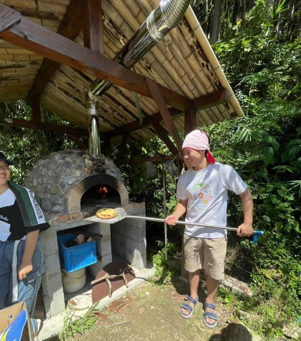
『地球と遊ぼう』第3回 夏野菜を使ったピザ窯パーティ 薪割り、ピザ作り、ピザ窯で焼くところまで、みんなで協力して行いました🪓 子供たちの作る自由で独創的なピザも、親御さんたちのつくるバランスの良いピザも、自分たちのつくった具材盛り… 活動を読む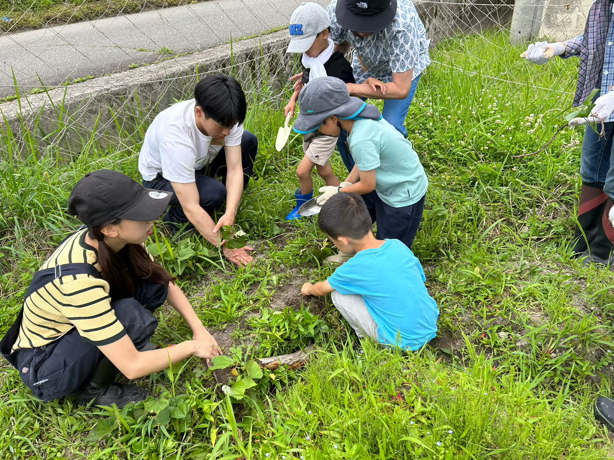
『地球と遊ぼう』 第一回さつまいもを植えよう さつまいもを植えるだけじゃなくて、みんなで薪割りや、川遊び、お昼ご飯まで食べることが出来て本当に楽しかったです😄😄 こどもたちからたく… 活動を読む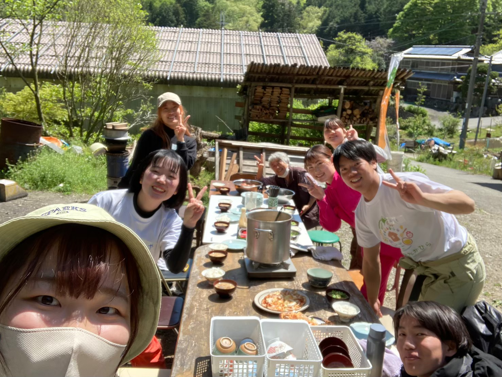
里野新歓 らららたかひらに興味を持って集まってくれた学生と里山新歓を行いました! みんなでお昼ご飯の準備🍙 ピザ生地を伸ばして、みんなで切った野菜や収穫したキノコをたくさん乗せて焼きまし… 活動を読む